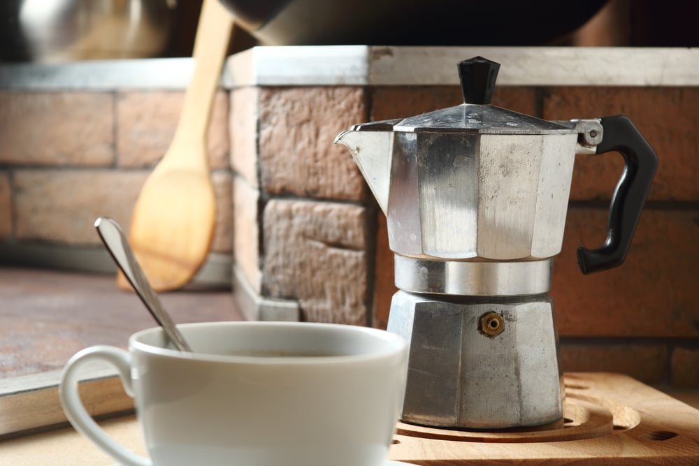

Moka konvice
Co je to Moka?
Moka je poměrně již dlouho známý způsob přípravy kávy, který v roce 1933 vynalezl Alfonso Bialetti. Design konvice je pro svět kávy opravdu ikonický a i lidé, kteří kávu nepijí ho často rozeznají. Jedná se o perkolační metodu výslednou chuť bychom mohli přirovnat k slabšímu esspresu.
Konvice je rozdělena do tří hlavních částí. Spodní část je určena pro vodu, prostřední pro zásobník s kávou a vrchní slouží jako prostor pro již extrahovanou kávu.
Příprava
Princip moka konvice spočívá, že vodu ve spodní části přivedeme k varu a voda je tak tlakem donucena postupně vystoupat do vrchní části konvice skrz kávu a tímto způsobem ji vyextrahovat.
Příprava je v tomto ohledu vcelku nenáročná, stačí konvici položit na plotýnku a máme v podstatě hotovo. Nevýhodou je, že voda při svém stoupání nabere částice kávy a v šálku se nám tak může objevit kávová sedlina.
Recept
Budeme potřebovat Moka konvici, mlýnek na kávu nebo umletou kávu.
-
Voda
Varnou nádobu naplníme studenou vodou po spodní okraj ventilu.
-
Umeleme kávu
Hrubost kávy by měla odpovídat hrubosti písku. Tedy jemnější mletí.
-
Káva
Kávu nasypeme do sítka a uhladíme ro roviny. Všechny části Moka konvice do sebe zašroubujeme.
-
Ohřejeme konvici
Moka konev položíme na středně velký plamen, až uslyšíme, že se voda vaří, káva začne tryskat do vrchní části. V tento moment snížíme intenzitu ohřívání na nejnižší možný plamen.
-
Ukončení ohřívání
V momentě, kdy je sběrná nádoba zaplněna ze dvou třetin, konvice z plamene vyjmeme a máme hotovo.